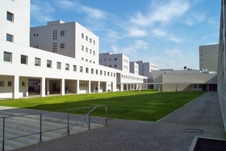
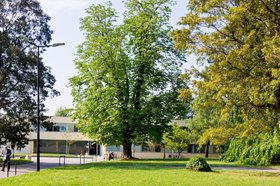

From 2003 to 2011 and From 2012 to the Present


 I have worked at the Faculty of Engineering of the University of Porto, as an external researcher for Laboratório SAPO/U.Porto, during a one year period, from June 2010 to June 2011. I got my MSc in Informatics and Computing Engineering from this same institution, where I was accepted as a PhD candidate for ProDEI, the Doctoral Program in Informatics Engineering, but unfortunately had to drop out for lack of funding.
The Faculty of Engineering, and more specifically the Department of Informatics Engineering, is increasingly investing in research, having inaugurated new labs and improved existing ones during these last few years. A great effort has been put into the people of this institution, giving them the conditions, the motivation and the guidance necessary to pursue their research interests, in an attempt to positively contribute to the international engineering and scientific community.
I have now returned to Laboratório SAPO/U.Porto in order to pursuit new research goals in the area of music retrieval and recommendation, while attempting to maintain a relationship with the Department of Computer Science at the Faculty of Sciences, through PDCC, the Doctoral Program in Computer Science, thus establishing a bridge between two very important departments of the University of Porto.
From 2011 to 2012
 I have worked on the Breadcrumbs project, at the Center for Research in Advanced Computing Systems, an associate unit of INESC TEC, that operates at the Faculty of Sciences of the University of Porto.
The Faculty of Science has a privileged location, surrounded by activity and covered in a wide range of tree species, nurtured by the presence of the Botanical Garden, one of the most beautiful green areas of the city of Porto, and an attraction for the students of plant biology and landscape architecture.